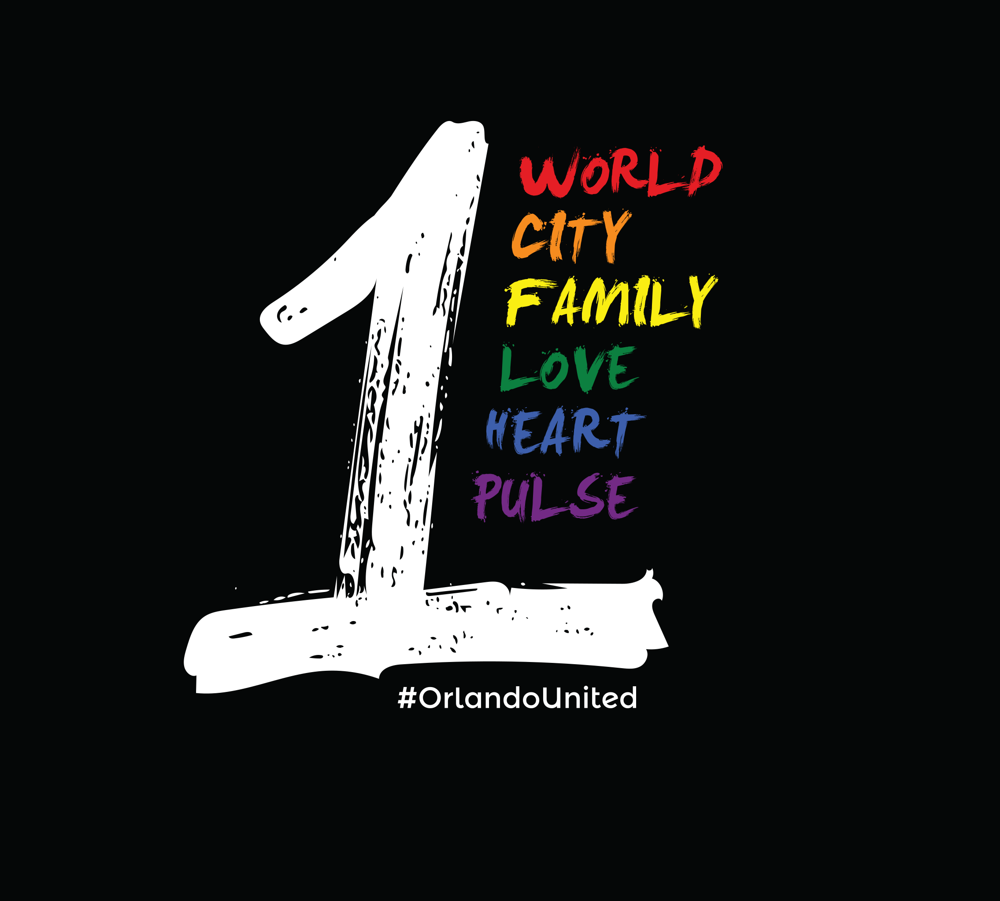

Other Work
Before I moved into research and product design, I spent years doing production work — 3D modeling, animation, texture work — on entertainment and defense programs. That background shaped how I think about craft, durability, and what it means to build something that has to hold up under real conditions.
Pulse Nightclub Fundraiser
After the Pulse tragedy, my team and I turned a rapid design response into a volunteer-led fundraiser that raised more than $80,000 for victims’ families.
The fundraiser started as a shirt concept for a single vigil and turned into a citywide effort. The work spanned design, production, packaging, and campaign spread — all under the emotional weight of a moment that demanded speed and care.

Identity & Brand Systems
These pieces show the logo, mark, and brand-language side of the archive: work built to signal recognition quickly and hold together across different applications.
Illustration & Promotional Visuals
This section holds the more expressive, poster-like, and image-led work: visuals designed to attract attention, carry tone, and communicate through form as much as through interface logic.
3D / Entertainment / Visual Production
This is the craft lineage underneath the rest of the portfolio: modeling, rendering, entertainment visuals, and production-heavy work that shaped how I think about structure, polish, and durability.
Let’s have a conversation.
If something in the older work resonates — the speed, the production craft, or the willingness to take on unfamiliar formats — I’d be glad to talk about how that side of the work shows up in everything I do now.
A good conversation is usually a better start than a formal intake form.